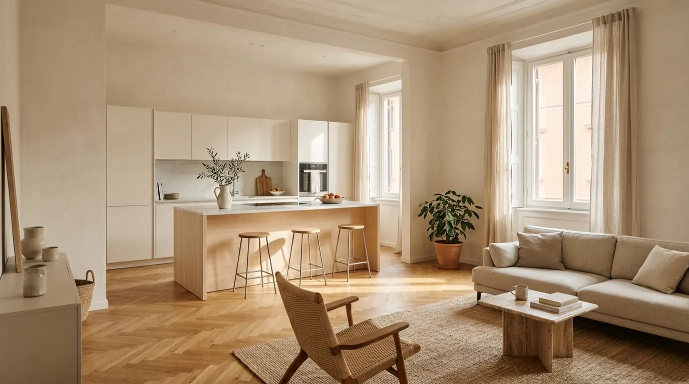
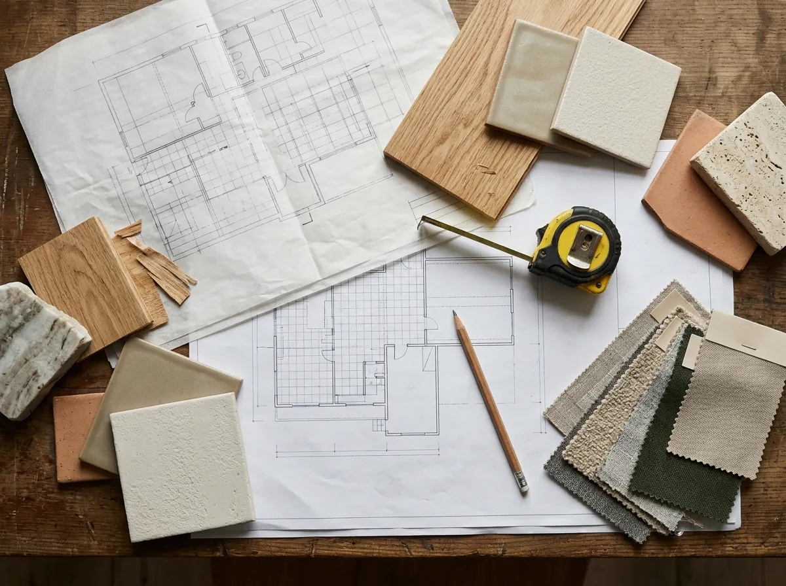
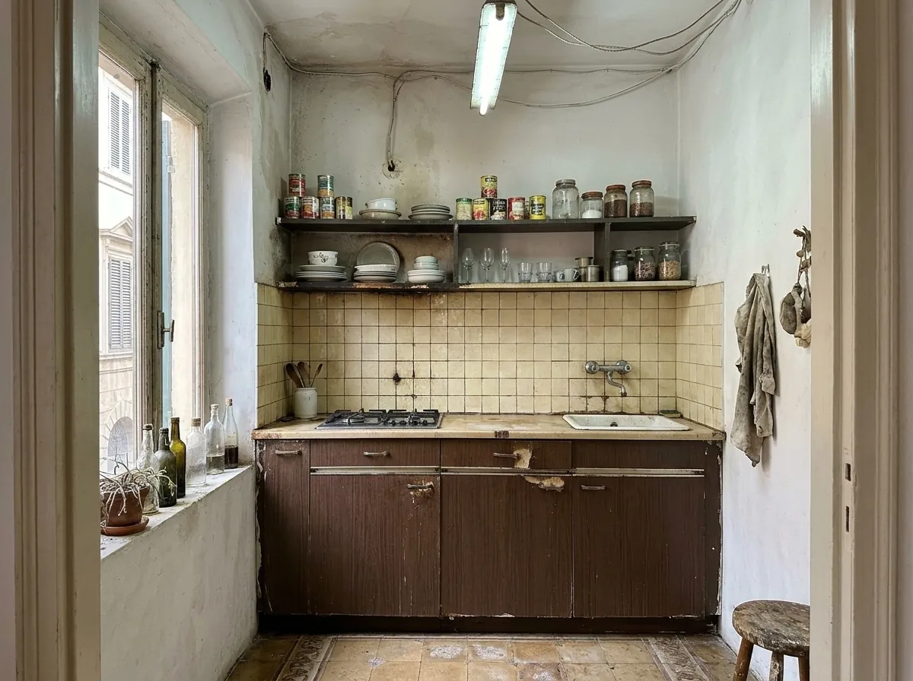
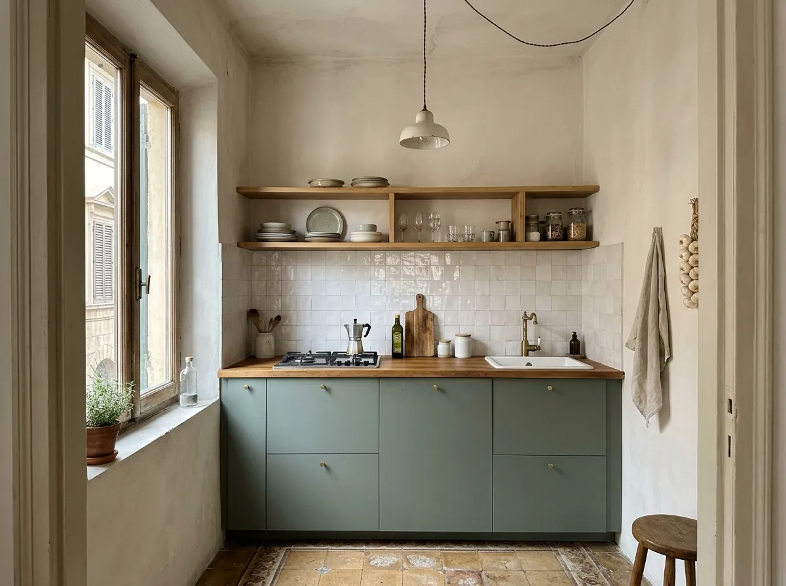

Ristrutturazioni chiavi in mano · Roma
Ci lasci le chiavi di casa. Te le ridiamo a lavori finiti.
Progetto, pratiche, cantiere e arredo su misura con un solo referente e un prezzo chiuso firmato prima di iniziare.
Passo passo
Dodici settimane, una dopo l'altra
Esempio di cronoprogramma per un appartamento di circa 90 m². Scorri e guarda come si riempie: è lo stesso schema che ricevi firmato.
- Rilievo e progetto
- Pratiche
- Demolizioni
- Impianti
- Massetti e intonaci
- Pavimenti e rivestimenti
- Falegnameria e infissi
- Pitture e pulizia
- Consegna
Un numero di telefono, non sette
Ristrutturare da soli
- Architetto per il progetto
- Geometra per le pratiche
- Impresa per le demolizioni
- Idraulico
- Elettricista
- Piastrellista
- Falegname
Ognuno con i suoi tempi. Se uno ritarda, slittano tutti.
Con Casalta
Un capocommessa
Coordina tecnici e squadre, aggiorna il cronoprogramma e ti scrive ogni settimana con le foto. Quando hai un dubbio chiami lui.

Una cucina prima e dopo
Trascina la linea. Stessa stanza, stessa finestra: impianti rifatti nei muri, mobili su misura, pavimento antico recuperato. Lavoro di esempio, foto generate con l'IA.
- Progetto e rendering
- Pratiche edilizie e direzione lavori
- Tutte le opere e i materiali scelti
- Smaltimento e pulizia finale
Tutto questo è nel prezzo chiuso.


DopoPrimaChi siamo
Casalta nasce dall'incontro tra uno studio di architettura e un'impresa di Monteverde. [Nome del titolare] segue i progetti e i fornitori, il capocommessa i cantieri. Apriamo uno o due cantieri alla volta, perché ogni appartamento abbia sempre qualcuno che lo conosce a memoria.
Dove lavoriamo
Roma dentro il Grande Raccordo Anulare: Prati, Monteverde, Trieste, Parioli, San Giovanni, Ostiense, EUR, Balduina. Fuori dal raccordo per appartamenti interi.
Qui l'impresa vera mette i suoi documenti: polizza di responsabilità civile per il cantiere, DURC, iscrizione alla Cassa Edile, contratto con prezzo chiuso e penali sui ritardi.
Domande
Cosa vuol dire prezzo chiuso?
Firmi un computo con tutte le lavorazioni e i materiali scelti. Il prezzo cambia solo se cambi tu qualcosa, con una variante scritta prima di farla.
Posso scegliere io i materiali?
Sì. Ti accompagniamo da fornitori di pavimenti, sanitari e cucine con cui lavoriamo, oppure usiamo quelli che porti tu.
Devo lasciare la casa?
Per un appartamento intero sì, per circa tre mesi. Per bagno o cucina si può restare, con qualche giorno senza acqua o senza cucina.
Chi si occupa del condominio?
Noi: avviso all'amministratore, orari del cantiere, protezione di ascensore e scale, pulizia a fine giornata.
Prenota il sopralluogo
Veniamo a casa, prendiamo le misure e parliamo di come vuoi vivere gli spazi. Dopo due settimane ricevi progetto e prezzo chiuso.
- Telefono
- Numero di esempio
- Indirizzo di esempio
- Studio
- Via di esempio, Roma, su appuntamento